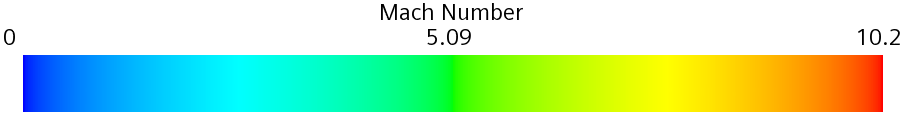
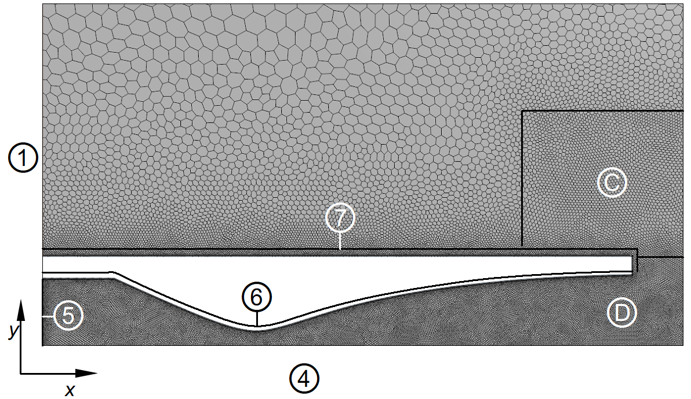
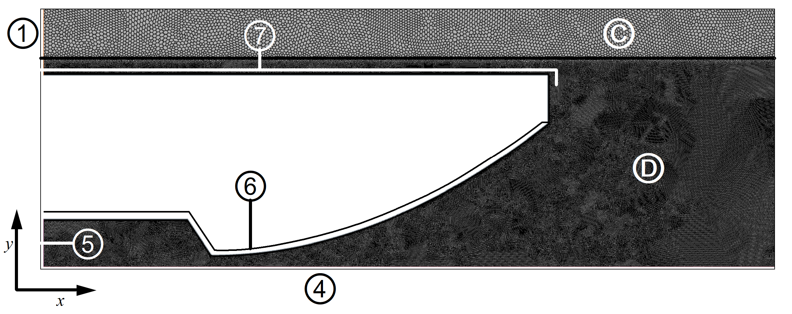
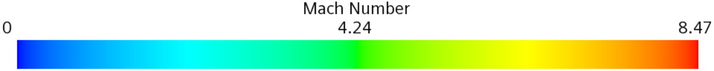
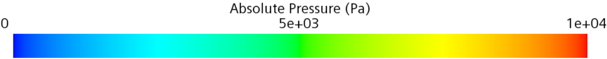
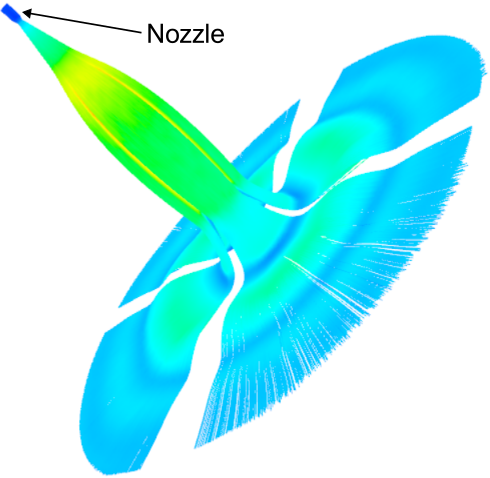
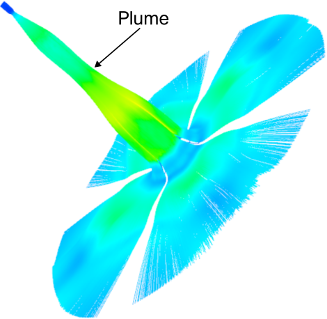
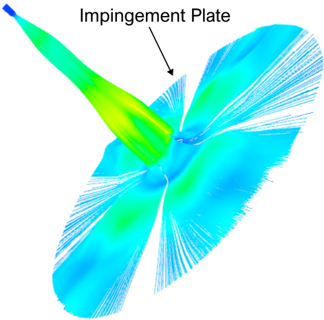
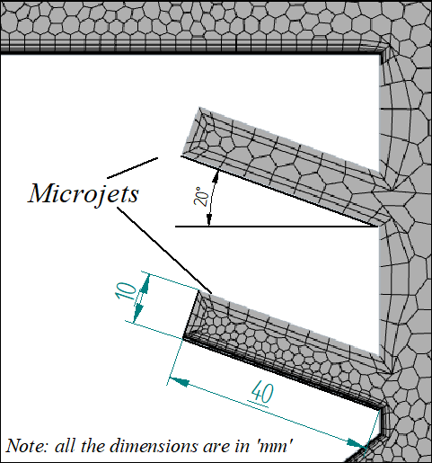
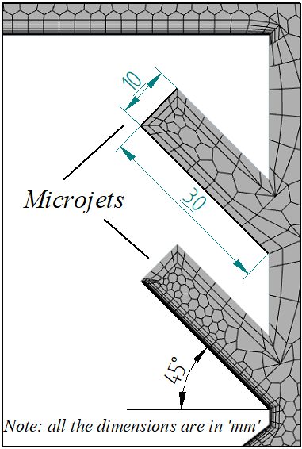

Expand.
The nozzle accelerates the gas. A pressure mismatch with the surroundings drives further expansion and compression outside the exit.
EXAMINE THE NOZZLES ↘HYPERSONIC JET IMPINGEMENT
An exhaust plume becomes a surface load. Can changing the flow change the consequences?
Nozzle reconstruction, compressible CFD and a study of fluidic injection during planetary landing. Follow the investigation from the geometry that accelerates a gas to the pressure and shear it leaves on the ground.
OPEN THE NOZZLE LABORATORY ↘GO TO THE LOAD COMPARISON ↘Density changes reveal the shock structure. The nozzle is only the beginning of the interaction.
How do nozzle flow and secondary injection shape impingement?
MATLAB geometry · CAD · STAR-CCM+ · flow diagnostics
Perpendicular injection raises peak shear. The canted case lowers both visible load peaks.
Close to touchdown, a landing engine directs high-speed gas at a surface. Shocks decelerate and redirect the plume; outward wall flow transfers momentum along the ground. The resulting loads motivate the investigation.
The nozzle accelerates the gas. A pressure mismatch with the surroundings drives further expansion and compression outside the exit.
EXAMINE THE NOZZLES ↘A shock and recirculating region can form above the plate. The largest pressure need not occur on the centreline.
READ THE FLOW STRUCTURES ↘Radial wall jets impose pressure and shear. Secondary injection is investigated as a way to alter both the structure and the loading.
COMPARE THE INTERVENTIONS ↘The simulations examine gas flow over an impermeable plate, principally under Martian atmospheric conditions. Regolith erosion and ejecta provide the motivation. Coupled soil motion, crater evolution and demonstrated particle containment are beyond the evidence presented here.
Build a credible nozzle model. Examine what survives the move into an impinging plume. Then judge an intervention against both normal and tangential loading.
These are related engineering questions, not four interchangeable runs. Choose a branch to follow its purpose, implementation and result. The nozzle laboratory below follows your selection.
Reconstruct and generate nozzle geometry in MATLAB; transfer profiles into CAD; build axisymmetric and quarter-domain STAR-CCM+ models; prescribe local mesh and boundary controls; diagnose nozzle acceleration, shock structures and wall loads; compare fluidic-injection configurations. Published nozzle definitions and cited methods provide the starting points.
Choose a nozzle, rotate its geometry and inspect the expansion. The analytical values are calculated here from the selected geometry and assumptions. They provide a reference against which to read the saved CFD.
Surface of revolution constructed from the original 500-point coordinate CSV. This is geometry, not a simulated flow volume.
Move the axial probe above. Geometry, local state and the analytical curve respond together.
A/A* and M follow the selected radius profile; the subsonic branch is used upstream of the throat and the supersonic branch downstream. This quasi-one-dimensional reference excludes shocks, boundary layers, heat transfer and chemistry. Scaling the geometry preserves its area ratio, but does not by itself preserve Reynolds number.
Chamber pressure is not exit pressure. Compare the calculated exit static pressure with the surroundings to understand why the external plume continues to adjust.
Logarithmic pressure axis. Chamber p₀ is a total pressure; exit pₑ and ambient pₐ are static pressures. All values follow the selected nozzle and analytical assumptions above.
For an ideal choked throat, ṁ = A* p₀ / √T₀ · √(γ/R) · [2/(γ+1)](γ+1)/(2(γ−1)). This is a calculated reference capacity with unit discharge coefficient, not a measured mass flow or an estimate of injector propellant cost. With the same gas and stagnation conditions, halving every geometric length preserves ideal exit Mach and divides this reference mass flow by four.
Changing the ambient value here compares pressure mismatch only. It does not solve internal separation, shock motion or a new plume. At high back pressure, the assumed fully expanded supersonic nozzle branch may cease to describe the physical flow.
NASA GLENN / COMPRESSIBLE MASS FLOW ↗The contour instrument implements the recovered geometry, rather than drawing a generic rocket nozzle. Read the original MATLAB operations beside their role in the pipeline.
The ideal model gives a consistency reference. The saved CFD adds viscosity, spatially varying flow and the external plume. The next question is whether its profiles and structures support the intended behaviour.
The two saved McCabe CSVs reveal different parts of the solution. One follows acceleration through the nozzle; the other samples the exit-plane velocity. Every plotted point below comes from those files.
A shock converts directed kinetic energy into compression and heating. The pressure footprint cannot be inferred from velocity reduction alone. Explore a one-dimensional normal shock to see the quantities move together.
The hot MDTN report compares a peak exit Mach of about 7.52 with the geometric ideal reference of 7.5265. It also describes a core nearer Mach 6.3. Close peak agreement and a nonuniform exit can coexist.
| Test | Evidence in the archive | Interpretation |
|---|---|---|
| Nozzle construction | Original coordinates and MATLAB geometry | Reconstructs the intended shape; independently check circular area ratio. |
| Exit behaviour | Saved McCabe velocity samples; reported MDTN and MSL exit plots | Assess acceleration, uniformity and wall effects separately from a single peak. |
| External plume | Mach, pseudo-Schlieren and shadowgraph fields | Qualitative structure check. MSL geometry and engine inclination differ from the published reference. |
| Surface intervention | Three configurations, common scales and radial load cuts | Comparative evidence within the study; no matched experimental validation or erosion prediction. |
Shock location, exit gradients and wall loads depend on the discretisation. The mesh strategy below explains where resolution was spent, followed by what actually changed when base size was varied.
The numerical work combines compressible flow, turbulence closure and local refinement. Nozzle interiors, developing plumes and impingement regions place different demands on the mesh.
Published dimensions and profile coordinates become a nozzle and surrounding flow domain. Axisymmetric modelling reduces the baseline problem; the injector study moves into a 3D quarter-domain.
STAR-CCM+ resolves mass, momentum and energy with ideal-gas assumptions. The reports use Spalart–Allmaras for the McCabe baseline and k–ω SST in the later nozzle and injector studies.
Exit profiles, shock structures, pressure footprints and surface shear provide complementary checks. Field-function initialisation and convergence controls are part of the documented iteration.
The compressible-flow model balances mass, momentum and total energy. For the mean-flow formulation, turbulence closure models the unresolved stresses. This is a numerical gas-flow investigation with prescribed inlets, walls and atmospheric outlets.
∂ρ/∂t + ∇·(ρu) = 0
∂(ρu)/∂t + ∇·(ρu⊗u + pI) = ∇·τ + ρf
∂(ρE)/∂t + ∇·[(ρE+p)u] = ∇·(τ·u − q) + ρf·u
ρ is density, u velocity, p static pressure, τ the modelled viscous/turbulent stress, E total energy per unit mass and q heat flux. These conservation equations describe the CFD problem; the browser’s nozzle instrument uses the simpler isentropic reference.
| Investigation | Chamber reference | Surroundings | Role and completion |
|---|---|---|---|
| McCabe | N₂ · 300 K · 5 MPa | 600 Pa · 300 K | Axisymmetric nozzle and plume investigation; original velocity CSVs available. |
| Hot MDTN | Air · 3,300 K · 20.265 MPa | 699 Pa · 210 K | Axisymmetric hot-flow results; proposed 20°/45° microjet placement. |
| MSL-derived baseline | N₂ · 300 K · 1.675 MPa table value | 690 Pa · 290 K | h/d = 34.5; mesh study and plume diagnostics. |
| 3D fluidic injection | MSL-derived primary configuration | 690 Pa · 290 K | h/d = 10; off, perpendicular and 5° canted comparison. |
The source alternates 1.675 and 1.765 MPa for the MSL-derived chamber pressure. The analytical instrument uses the table value; it does not silently resolve the native-case setting. Species-fraction transcription and injector Mach inconsistencies are recorded in the source notes.
Base size sets a reference. Local surface targets, volume controls and prism stacks determine the resolution where the nozzle, secondary jet and plate interact. Choose a region to inspect its reported settings and purpose.



Walls are described as no-slip, adiabatic and impermeable. Stagnation inlets prescribe chamber conditions; pressure outlets represent the surrounding atmosphere. The reports document grid-sequencing initialisation and minimum temperature/pressure restrictions to manage difficult early iterations.
Secondary jets intersect the primary plume. Perpendicular injection and 5° canting produce different pressure and shear responses. Compare them on the same figures, at the same radial position.


The Mach slice identifies how the intervention reorganises the gas. The footprint locates the loading. The radial cuts test whether the change helps pressure, shear, or both. These views describe the same three configurations.
A lower pressure maximum is not sufficient if shear becomes worse. Each marker below is one tested configuration, using the maximum visible value in each digitised radial curve. Select a marker to coordinate the fields, charts and interpretation.
Lower-left of the off reference means lower visible peaks in both curves. Maxima may occur at different radii. This is a two-objective comparison of the available cuts, not a continuous design frontier.
| Configuration | Pressure peak / Pa | Peak radius / m | Change vs off | Shear peak / Pa | Peak radius / m | Change vs off |
|---|
The manuscript states approximately 21% pressure and 27% shear reduction for canted injection. The visible line-cut maxima extracted here give a different comparison against off. They describe the plotted traces only: line thickness, overlap and pixel resolution limit precision, and the manuscript’s reference definition needs reconciliation. Neither set should be presented as an independently verified global surface-load reduction.
There is no valid total-force integral from one radial cut of this non-axisymmetric injector flow. Surface coordinates and a complete pressure field are required. Injector flow rate, thrust penalty and regolith response likewise need their own outputs.
READ THE ORIGINAL ANALYSIS ↗The selected configuration stays highlighted in both plots.
Absolute source-trace values. The probe compares all configurations below.
| Configuration | Pressure / Pa | Actual visible radius / m | Shear / Pa | Actual visible radius / m |
|---|
Probe values retain the nearest visible coordinate of each individual curve within 6 mm. A blank source region remains unavailable; the table does not interpolate across overlap. Difference curves above require visible values at the same source x-coordinate.
The original pressure/shear CSVs are not present in the readable exports. These native curves trace coloured lines in the original report images, without smoothing or filling hidden portions. Gaps indicate occluded curve pixels; probe values use the nearest visible sample. They support approximate comparison, not exact peak reductions or global surface maxima.
Perpendicular injection redistributes the pressure footprint, but the reported shear profile has a higher peak than the off case. Canting produces a different compromise: lower prominent peaks and a smoother outer loading pattern, while central pressure can remain above the off case.
The manuscript states reductions of approximately 21% in peak pressure and 27% in peak shear for canted injection. Those stated percentages need reconciliation with the plotted peaks and comparison baseline; they are not independently reproduced performance figures.



These are archived streamline renderings. They are not time sequences or exported 3D volume data. The report also samples an inward pressure gradient outside the plume core as evidence for the swirl hypothesis. A gas-pressure gradient alone does not demonstrate the capture of regolith particles.
The most useful account includes the constraints and revisions. These decisions connect the geometry, solver behaviour and interpretation of the results.
The McCabe geometry provides a published coordinate set and a Mach 5-class design target. It supports checks on nozzle acceleration and exit behaviour before the investigation extends to more complex plume–surface interaction.
An isentropic area–Mach check is a reference calculation. Matching one exit value cannot establish the accuracy of the whole downstream flow field.
The hot-nozzle MATLAB generator uses a linear converging profile, a parabolic divergence and an isentropic area–Mach calculation. The archive also contains a separate Method of Characteristics implementation with its original attribution. These algorithms are kept distinct here.
READ THE ORIGINAL QUARTER-SCALE GENERATOR ↗The report describes early difficulties separating nozzle and atmospheric conditions. Field functions, solver initialisation and turbulence-model alternatives appear in the saved case history. A converged-looking contour still needs boundary-condition and conservation checks.
The archive retains the unsuccessful and revised configurations. Their filenames document iteration; they do not independently prove which case generated each final field.
Expansion lowers static temperature. With γ = 1.4, nitrogen at M = 5.1 and a stagnation temperature of 300 K has an ideal local temperature near 48 K and velocity near 723 m/s. Using the chamber’s 300 K directly in the local speed of sound gives a different, inappropriate comparison.
The live nozzle instrument calculates static temperature and velocity together. This analytical clarification does not replace checking the saved CFD fields.
The 3D study reduces computational cost by modelling one of four injectors. Its text uses both symmetry-plane and cyclic-reconstruction terminology. The native boundary settings need checking before claiming a fully verified representation of same-handed swirl.
The reported 7/9/11 mm sensitivity study concerns the injector-off case. Additional mesh, domain and transient checks remain valuable for active injection.
The hot MDTN study places proposed microjets at 20° and 45°, but its final report explicitly states that mitigation results were not completed. The off/perpendicular/5° comparisons above belong to the separate MSL-derived configuration.


Geometry reconstruction, circular area ratios, axisymmetry and a 3D sector turn a landing-flow question into tractable numerical models. Replacing the problematic parabolic MSL approximation with a conical nozzle is part of the engineering work, rather than an invisible preprocessing step.
Exit profiles check the nozzle; density diagnostics expose shock structure; mesh variation tests sensitivity; footprints and radial pressure/shear cuts interrogate the surface response. Each measures a different part of the argument.
Perpendicular and canted injection cannot be ranked by pressure alone. The canted case has the more favourable pair of visible peak loads, while central pressure, flow uniformity, computational fidelity and the unmeasured cost of injection remain part of a rounded design assessment.
For a calorically perfect gas under isentropic conditions, the area ratio determines the two Mach branches. The selected branch and stagnation conditions determine static properties.
A/A* = (1/M) [2/(γ+1) · (1+(γ−1)M²/2)](γ+1)/(2(γ−1))
T = T₀ / [1+(γ−1)M²/2]
p = p₀ [T/T₀]γ/(γ−1)
V = M √(γRT)
NASA GLENN / ISENTROPIC RELATIONS ↗Original numerical data, archived fields and new analytical calculations have different roles. Their provenance remains visible so the reader can inspect what each exhibit establishes.
The 500-point McCabe contour and both line-probe CSVs drive the native geometry and velocity instruments. Values retain their original sampling and units.
OPEN THE EXHIBIT DATA ↗Flow images are original embedded figures. Pressure and shear curves are explicitly approximate digitisation. Reported reductions remain separate from independently checked values.
READ THE SOURCE MANIFEST ↗The browser constructs revolved geometry and solves the area–Mach relation. Assumption controls affect that reference; they do not rerun or alter archived CFD.
READ THE CALCULATION MODULE ↗Archived reports retain their original cover/template pages. The website distinguishes their different model configurations and completion states. The source archive is preserved unchanged; no research solver or expensive computation was run to build this page.
[01] McCabe, A. (1967). Design of a Supersonic Nozzle. Published profile used for the baseline geometry.
[02] Mehta et al. (2013). Thruster Plume Surface Interactions: Applications for Spacecraft Landings on Planetary Bodies. AIAA Journal ↗
[03] Fontes & Metzger (2022). Rocket Plume Interacting with Mars Soil Particulates. AIAA SciTech ↗
[04] Kobayashi & Ukai (2022). Effectiveness of a Supersonic Jet–Jet Interaction Technique on Flow Structure in an Underexpanded Jet Impinging on a Perpendicular Plate. Injector study discussed in Report B, printed pp11–14.
The MSc research takes a different step: evaluating learned turbulent-flow reconstructions and their uncertainty. Both studies ask what makes a computed result credible.
Loading the original numerical exhibits…